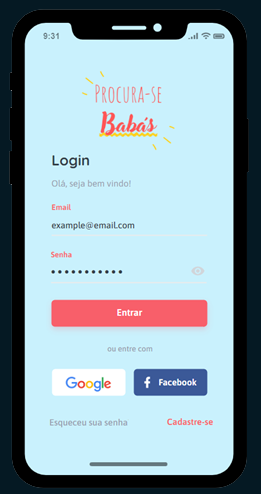
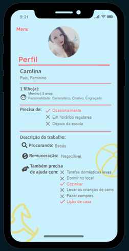

Procura-se Babás
Projeto desenvolvido com a proposta dedesenvolvimento de um aplicativo que realizasse a comunicação entre pais e babás. Realizei toda a documentação do sistema como o levantamento dos requisitos funcionais e não funcionais, e diagramas(caso de uso, documentação caso de uso, classe e diagrama de sequencia) .

